29 ДЕК — 3 ЯНВ01
НОВЫЙ ГОД ВМЕСТЕ
Архыз
Дом, катание и длинные вечера со своими.
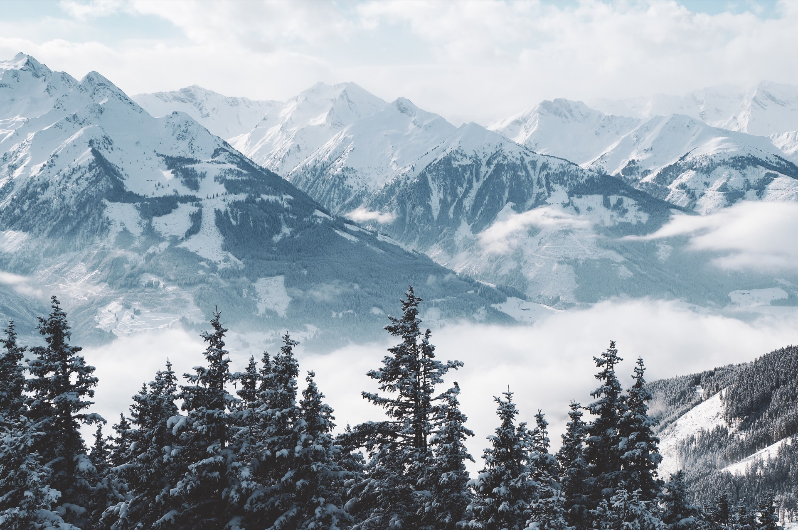
Архыз, потом Эльбрус.
Сноуборды, свои люди и праздник в горах.
Встречаем Новый год в Архызе,
а за следующим спуском — на Эльбрус.
Дом, катание и длинные вечера со своими.
Ещё три полных дня на склоне.
Заселение с 14:00. Собираемся в домах, распаковываем доски и начинаем отпуск.
Архыз · 29 декабря, 14:00 — 3 января, 12:00
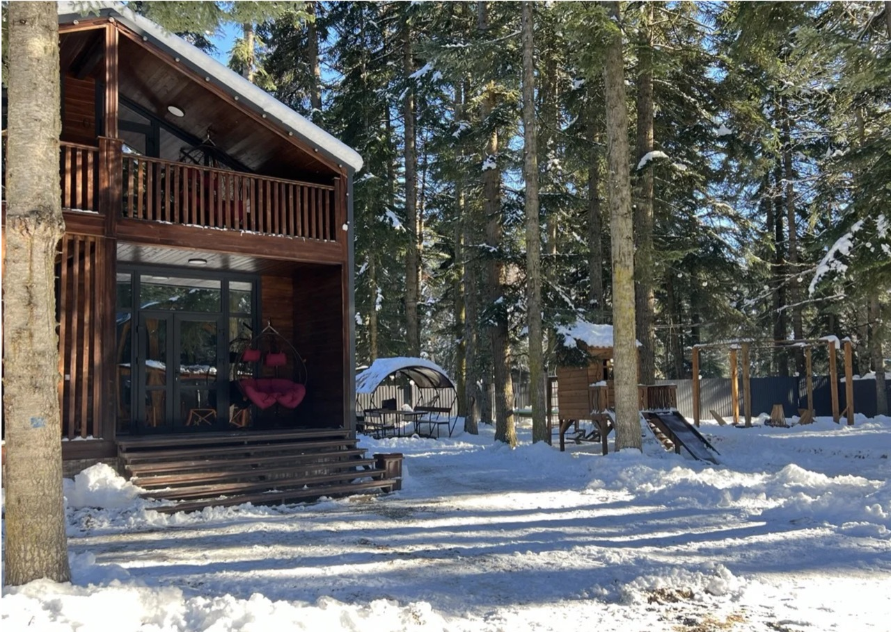
А / 01Большой дом для нашей компании.
Вместимость и распределение комнат уточняем.
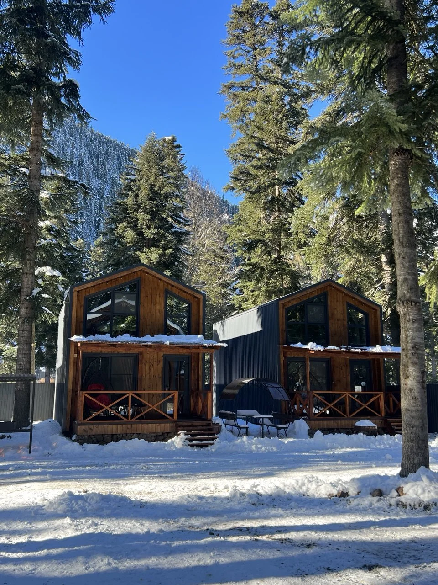
А / 02Две спальни и диван.
Распределение по комнатам добавим позже.
Две спальни и диван.
Кто живёт в этом доме — уточняем.
Варианты из заметок: у подъёмников или домики в 10–20 минутах на машине. Бронирование пока не подтверждено.
Все выезжаем из Москвы.
Выбираем свой способ добраться до Архыза.
Летим до Минеральных Вод, дальше едем в горы на трансфере.
Черновая оценка из заметок на человека.
Не актуальные тарифы и не сумма к оплате.
Итог зависит от билетов, жилья и транспорта. Для поездки на машине расходы нужно пересчитать.
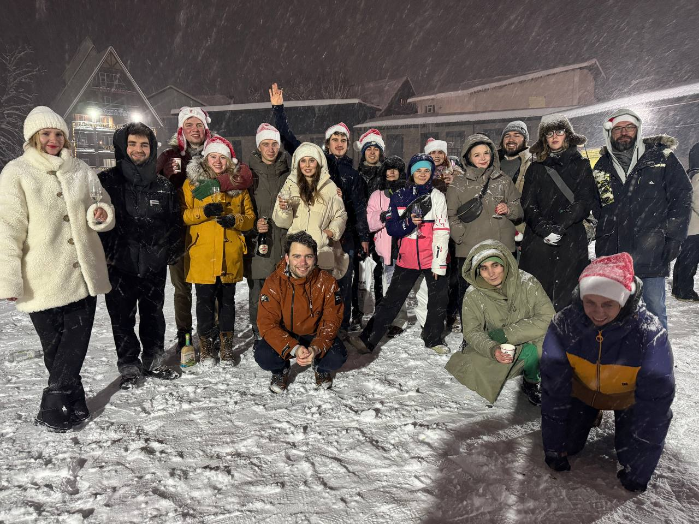
Рейсы и места в машинах · Трансферы · Жильё на Эльбрусе · Распределение по домам
Четыре этапа поездки, экипажи и трансферы. Знак «?» означает, что участие ещё под вопросом.
Заселение 29 декабря с 14:00.
Даты выезда и рейсы пока не указаны.
Сразу до места · 4 человека вместе с водителем
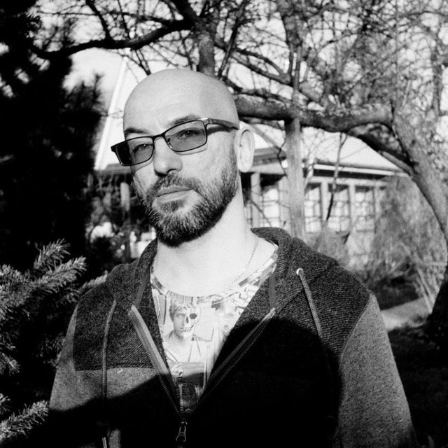
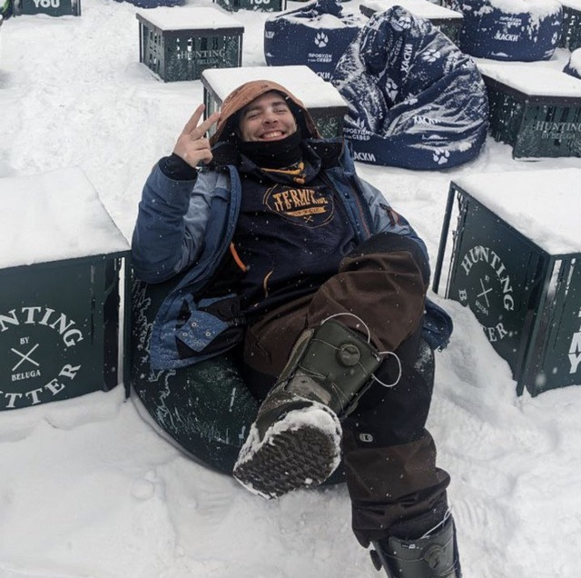
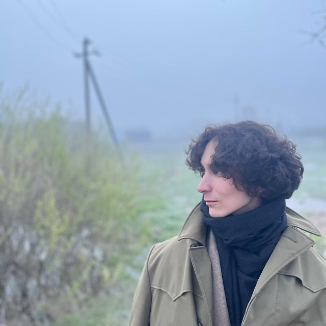
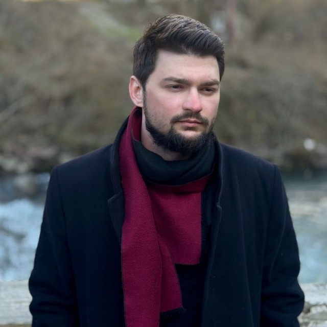
Москва → Минеральные Воды → Архыз
Участие обоих под вопросом
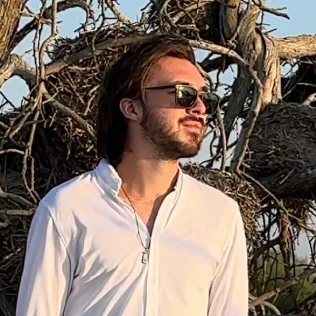
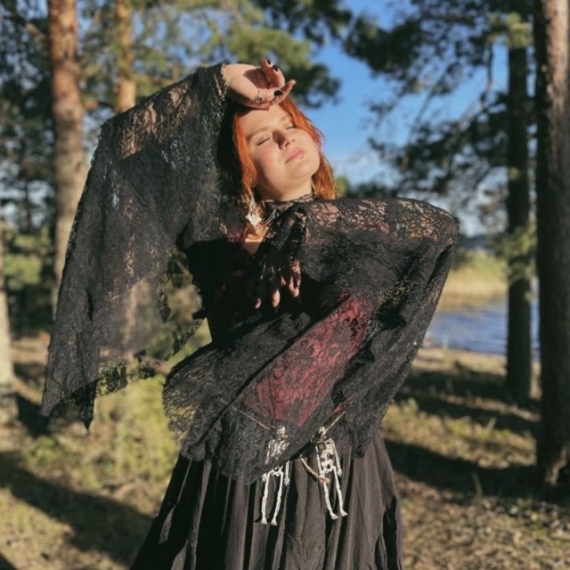
Участие в Архызе под вопросом
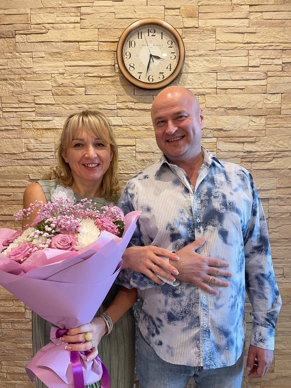
Участие в поездке под вопросом
Выселение 3 января до 12:00.
Дата возвращения каждого уточняется.
По плану — 3 января.
Машины + трансфер для тех, кто не поместится.
По общему плану — 7 января.
Личные даты и транспорт уточняются.
Подтверждения участия · Вместимость машин с досками · Рейсы · Трансферы · Обратные экипажи
Кто куда едет, как добирается и где будет жить — в личных страницах участников.
Токсик добытчик
Машина Игоря · пассажир
План поездкиСмотрит матом
Самолёт до Минвод + трансфер
План поездкиКапитан
Машина · водитель
План поездкиСамолёт до Минвод + трансфер
План поездкиТимати Шалалэ
Машина Игоря · пассажир
План поездкиКто мяукает?
Машина Игоря · пассажир
План поездкиСамолёт до Минвод + трансфер
План поездкиСпортсмен
Пока не указано
План поездкиПока не указано
План поездкиКингз Мараули
Машина · водитель
План поездкиГлавный суетолог
Машина Дани · пассажир
План поездкиМашина · водитель
План поездкиТоксик добытчик
Машина Игоря · пассажир. Из Москвы сразу до места в Архызе.
Дата выезда и детали дороги ещё уточняются.
Ещё на обсуждении. Дальнейший транспорт и обратную дорогу уточним позже.
Общий план дорогиРасселение ещё не определено. Дом, комнату и соседей добавим позже.
Расселение ещё не определено. Дом, комнату и соседей добавим позже.
Смотрит матом
Москва — Минеральные Воды самолётом, затем трансфер в Архыз. Рейсы и время встречи пока не согласованы.
Трансфер: 15 000 ₽ за машину на троих; по 5 000 ₽ с человека при полной посадке.
Ещё на обсуждении. Дальнейший транспорт и обратную дорогу уточним позже.
Общий план дорогиРасселение ещё не определено. Дом, комнату и соседей добавим позже.
Если участие подтвердится: расселение ещё не определено. Дом, комнату и соседей добавим позже.
Капитан
Машина · водитель. Из Москвы сразу до места в Архызе.
Дата выезда и детали дороги ещё уточняются.
Ещё на обсуждении. Дальнейший транспорт и обратную дорогу уточним позже.
Общий план дорогиРасселение ещё не определено. Дом, комнату и соседей добавим позже.
Расселение ещё не определено. Дом, комнату и соседей добавим позже.
Москва — Минеральные Воды самолётом, затем трансфер в Архыз. Рейсы и время встречи пока не согласованы.
Трансфер: 15 000 ₽ за машину на троих; по 5 000 ₽ с человека при полной посадке.
Ещё на обсуждении. Дальнейший транспорт и обратную дорогу уточним позже.
Общий план дорогиРасселение ещё не определено. Дом, комнату и соседей добавим позже.
Не едет. Проживание не планируется.
Тимати Шалалэ
Машина Игоря · пассажир. Из Москвы сразу до места в Архызе.
Дата выезда и детали дороги ещё уточняются.
Ещё на обсуждении. Дальнейший транспорт и обратную дорогу уточним позже.
Общий план дорогиРасселение ещё не определено. Дом, комнату и соседей добавим позже.
Расселение ещё не определено. Дом, комнату и соседей добавим позже.
Кто мяукает?
Машина Игоря · пассажир. Из Москвы сразу до места в Архызе.
Дата выезда и детали дороги ещё уточняются.
Ещё на обсуждении. Дальнейший транспорт и обратную дорогу уточним позже.
Общий план дорогиРасселение ещё не определено. Дом, комнату и соседей добавим позже.
Расселение ещё не определено. Дом, комнату и соседей добавим позже.
Москва — Минеральные Воды самолётом, затем трансфер в Архыз. Рейсы и время встречи пока не согласованы.
Трансфер: 15 000 ₽ за машину на троих; по 5 000 ₽ с человека при полной посадке.
Ещё на обсуждении. Дальнейший транспорт и обратную дорогу уточним позже.
Общий план дорогиРасселение ещё не определено. Дом, комнату и соседей добавим позже.
Если участие подтвердится: расселение ещё не определено. Дом, комнату и соседей добавим позже.
Спортсмен
Способ добраться до Архыза пока не выбран.
Уточним после подтверждения участия. Участие в поездке под вопросом.
Ещё на обсуждении. Дальнейший транспорт и обратную дорогу уточним позже.
Общий план дорогиЕсли участие подтвердится: расселение ещё не определено. Дом, комнату и соседей добавим позже.
Если участие подтвердится: расселение ещё не определено. Дом, комнату и соседей добавим позже.
Способ добраться до Архыза пока не выбран.
Уточним после подтверждения участия. Участие в поездке под вопросом.
Ещё на обсуждении. Дальнейший транспорт и обратную дорогу уточним позже.
Общий план дорогиЕсли участие подтвердится: расселение ещё не определено. Дом, комнату и соседей добавим позже.
Если участие подтвердится: расселение ещё не определено. Дом, комнату и соседей добавим позже.
Кингз Мараули
Машина · водитель. Из Москвы сразу до места в Архызе.
Дата выезда и детали дороги ещё уточняются. Участие в поездке под вопросом.
Ещё на обсуждении. Дальнейший транспорт и обратную дорогу уточним позже.
Общий план дорогиЕсли участие подтвердится: расселение ещё не определено. Дом, комнату и соседей добавим позже.
Если участие подтвердится: расселение ещё не определено. Дом, комнату и соседей добавим позже.
Главный суетолог
Машина Дани · пассажир. Из Москвы сразу до места в Архызе.
Дата выезда и детали дороги ещё уточняются. Участие в поездке под вопросом.
Ещё на обсуждении. Дальнейший транспорт и обратную дорогу уточним позже.
Общий план дорогиЕсли участие подтвердится: расселение ещё не определено. Дом, комнату и соседей добавим позже.
Если участие подтвердится: расселение ещё не определено. Дом, комнату и соседей добавим позже.
Машина · водитель. Из Москвы сразу до места в Архызе.
Дата выезда и детали дороги ещё уточняются. Участие в поездке под вопросом.
Ещё на обсуждении. Дальнейший транспорт и обратную дорогу уточним позже.
Общий план дорогиЕсли участие подтвердится: расселение ещё не определено. Дом, комнату и соседей добавим позже.
Не едет. Проживание не планируется.